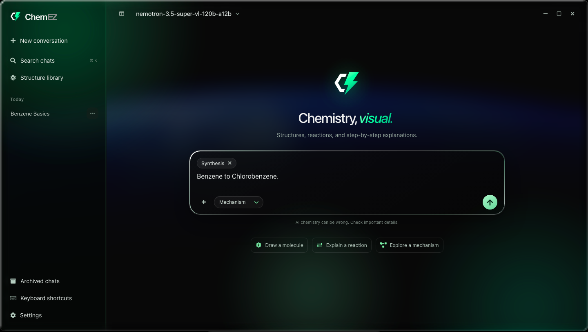
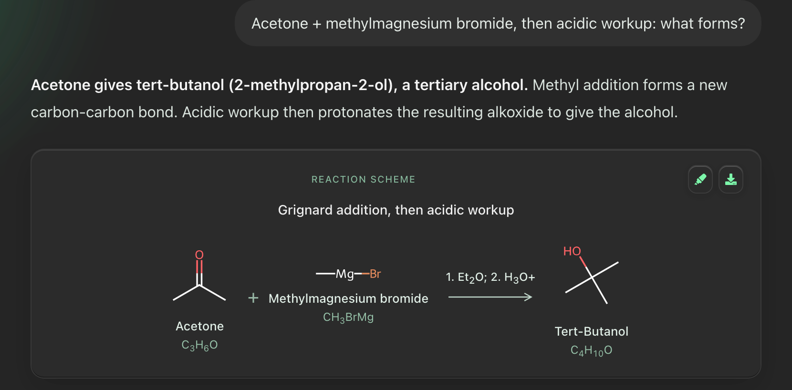

Start with the molecule.
Validated 2D drawings, IUPAC names, molecular formulas, interactive 3D exploration, and PNG exports.
Your desktop AI chemistry tutor. Molecular structures, reaction schemes, and electron movement, drawn right into the explanation.
Free for Mac, Windows and Linux · Bring your own API key · Open source


A reproducible sample answer, rendered through ChemEZ and RDKit.
ChemEZ brings it into the conversation.
Validated 2D drawings, IUPAC names, molecular formulas, interactive 3D exploration, and PNG exports.
See reactants, products, reagents, and conditions together in a readable reaction scheme.
Explore resonance contributors, lone pairs, formal charges, and curved arrows showing electron movement.
Switch between Quick Answer, Explain, and Mechanism modes. Adjust the learning level, attach a chemistry image, or activate a slash command for focused help.
Connect NVIDIA, Gemini, OpenAI, Anthropic, OpenRouter, or a compatible endpoint. Search past chats and revisit saved structures. An optional image reader can work alongside your chat model.
The chemistry runtime comes bundled. No separate Python or Node.js installation.
Version 0.1.3 · Unsigned builds. Read the release notes and opening instructions before installing.
ChemEZ offers new versions in the app, at most once a week.